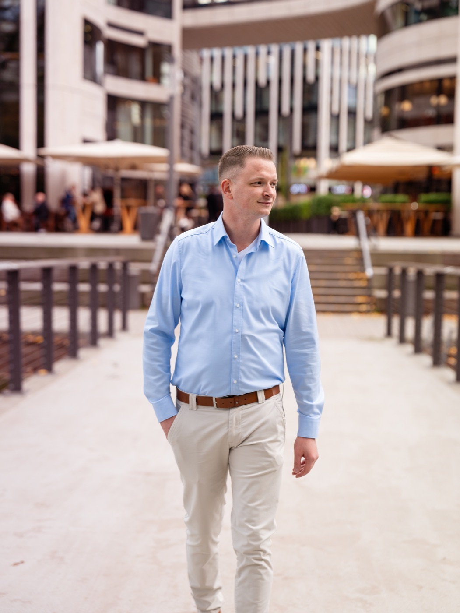
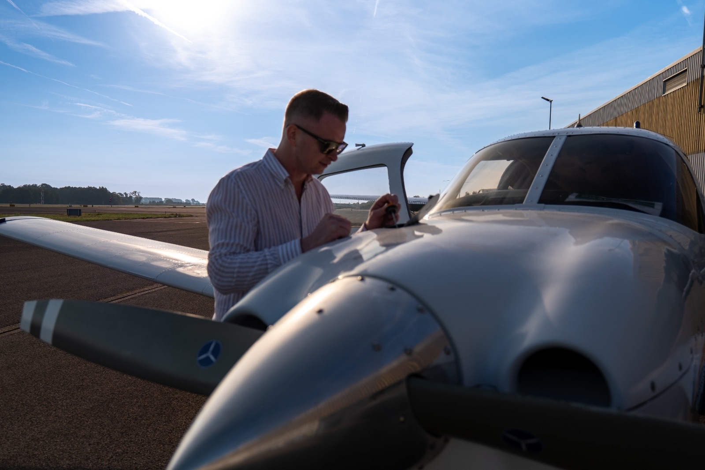

Über uns
Aus der Fertigung, nicht aus der Software.
Zwölf Jahre Unternehmensberatung in produzierenden Betrieben. Die erste Zeile Code für die Zustandsüberwachung kam erst nach Jahren in der Praxis.

Gründer, Geschäftsführer, Software-Architekt
Sascha P. Forbach
Ich habe zu oft gesehen, wie eine Spindel läuft, bis sie nicht mehr läuft. Danach steht die Maschine Tage oder Wochen, und niemand kann sagen, wann sich der Schaden angekündigt hat.
Mit 18 habe ich neben dem Beruf angefangen, BWL zu studieren, und mit dem Bachelor abgeschlossen. Seit zwölf Jahren bin ich Unternehmensberater, mit einem ungewöhnlich konkreten Schwerpunkt: Fertigungsprozesse, Qualitätssicherung und Anlagenverfügbarkeit in produzierenden Betrieben. Die Signale, die einen Spindelschaden ankündigen, sind längst messbar. Sie werden nur nicht ausgewertet.
Daraus ist unser Produkt entstanden: eine Zustandsüberwachung für gemischte Maschinenparks, wie sie in jeder Lohnfertigung stehen. Als Software-Architekt habe ich Box und Plattform selbst entworfen. Beide folgen einer Regel: Die Maschine wird nur gelesen, nie verändert.
Überzeugung
Die deutsche Industrie gewinnt nicht über den Preis. Sie gewinnt, wenn ihre Maschinen laufen, wenn sie laufen müssen.
Fertiger aus Asien und Osteuropa sind günstiger, und das wird so bleiben. Was sie nicht so leicht kopieren, ist Liefertreue bei höchster Präzision. Genau die geht verloren, wenn eine Spindel ungeplant ausfällt.
Ein deutscher Betrieb, der seine Stillstände im Griff hat, liefert pünktlich, hält Toleranzen und plant Wartung, statt sie zu erleiden. Dafür bauen wir unser System. Sascha P. Forbach

Denkweise
Das Steuer halte ich selbst in der Hand.
Egal wo ich stehe: Ich gebe die Verantwortung nicht ab. Und 100 Prozent Leistung sind für mich gerade gut genug.
So denkt man auch in der Luftfahrt. Vor jedem Flug wird geprüft, nicht erst, wenn etwas ausfällt. Mit dieser Haltung bauen wir unser System: Eine Spindel kündigt ihren Schaden an, und wir sorgen dafür, dass jemand rechtzeitig hinsieht.
Werdegang
Wie wir hierhergekommen sind.
- 2014Start in der UnternehmensberatungBeratung produzierender Betriebe mit Schwerpunkt Prozessqualität und Anlagenverfügbarkeit.
- 2016Schwerpunkt ZerspanungLohnfertiger und Werkzeugbauer mit gemischten CNC-Maschinenparks. Dort entsteht der meiste ungeplante Stillstand, und dort gibt es die wenigsten brauchbaren Werkzeuge dagegen.
- 2021Erste Konzepte zur SpindelüberwachungSchwingungsanalyse an Spindellagern und die Frage, welche Signale Steuerungen über OPC UA tatsächlich herausgeben.
- 2025Gründung der Forbach and Partners LtdEigene Gesellschaft für die Entwicklung der Plattform, eingetragen in Zypern, mit Ansprechpartner in Düsseldorf.
- 2026Plattform und Box fertig entwickeltSoftware-Architektur von Sascha P. Forbach. Verschlüsselte Anbindung, Zertifikatsaustausch und Lese-Benutzerrechte gegen eine abgesicherte SINUMERIK-Umgebung geprüft. Markteinführung mit den ersten Fertigungsbetrieben.
Haltung
Woran Sie uns messen können.
In einem Markt voller Versprechen sagt am meisten über einen Anbieter, was er ausschließt.
Das sagen wir zu
- Wir greifen nie in Ihre Steuerung ein, technisch vierfach abgesichert.
- Eine Ansicht für alle Fabrikate in Ihrer Halle.
- Jede Meldung mit nachvollziehbarer Begründung.
- Daten ausschließlich in Rechenzentren in Deutschland.
- Im Erstgespräch eine klare Aussage, ob Ihre Steuerung anbindbar ist.
Das versprechen wir nicht
- Keinen „Null-Stillstand“. Den kann niemand garantieren.
- Keine Vorhersage auf den Tag genau.
- Keine Optimierung von Drehzahl oder Vorschub. Das hieße, in Ihre Maschine zu schreiben.
- Keine Kennzahlen aus fremden Projekten als Ihre Erwartung.
Nächster Schritt